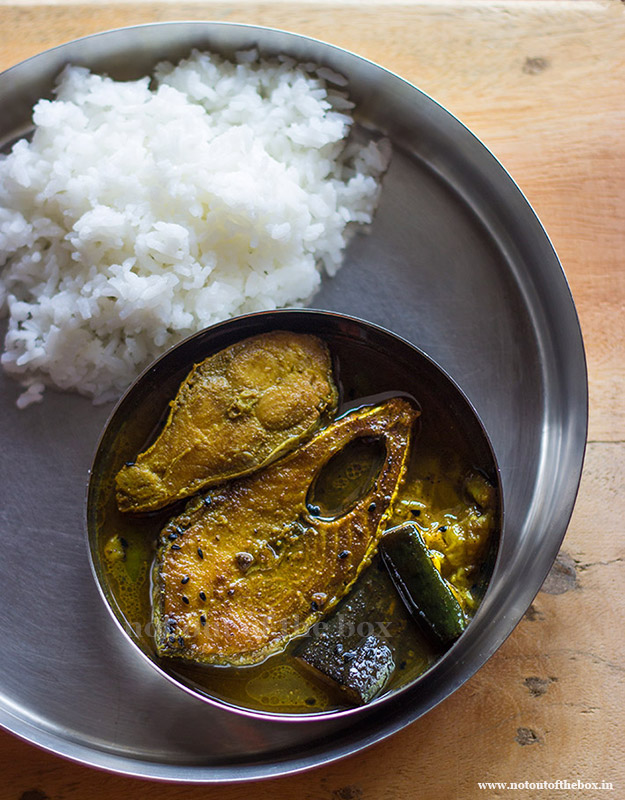

Ilish Macher Jhol

Description
Ilish mach, aka, poddar ilish is one of the best fish in the earth. Its aroma, while might be a bit pungent and needs some acquired taste to some people, once acquired, feels the best. And making it in the curry style of bengal makes it so savory that one can feel its taste long after it's been consumed. It's highly recommended to eat it at least once, cause once you eat it, you can't stop eating!
Ingredients
- Ilish mach
- mustard oil
- jeera
- Tejpata
- Alu(optional)
- Jeera powder
- Dhonia powder
- Lonka powder
- Holud
- Lobon
- Gorom masala
Steps
- Mix the fish with some holud and Lobon taste-wise.
- Put some oil in the kadai and heat it well.
- Put the fish in the oil and fry it well and keep it aside
- Add jeera and Tejpata in the oil and fry some alu with lobon
- Add jeera powder, dhonia powder, holud and lonkar gura and stir it.
- Put the lid and steam it for a couple of minutes.
- Add water to it and steam it until bugbugi appears in the jhol
- Add the fish to the jhol and steam it
- Finally add the gorom masala and stir it and it's done!
Home